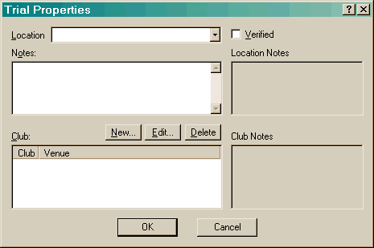
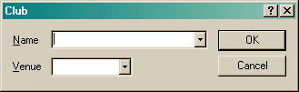

The Trial Properties dialog is displayed when you create a new trial or edit an existing one. A trial can be created in two ways: by creating the trial directly, or by creating it from a calendar entry.
A trial can be created directly when the Runs tab is activated. If you have multiple dogs, it will be created in the dog that is currently selected.
A trial can be created from a calendar entry by selecting the "Create Trial Entry" context menu item or the "Create Trial" button. If you have multiple dogs, a selection dialog will be presented after you enter all the details of the trial, allowing you to select which dogs you want to create this trial for.

The Location field contains a list of locations from all the trials you have created and all of the calendar entries. You may also type anything you want in this field. When the value in this field is changed, the top edit control on the right side will be updated with any previously saved Location Information.
The Verified checkbox is for your information - it is used to note that the results in the trial have been verified. For instance, AKC posts all trial results online at http://www.akc.org/events/search/.
The Notes field is for any information you wish to comment on. When creating a trial directly from a calendar entry, this field will initially contain the notes from the calendar entry.
The Club list generally only contains a single club. However, when a trial is co-sanctioned, this field contains a list of all the co-sanctioning clubs. The order the clubs are listed in is extremely important - actually, the first club listed is the critical information. The club that is listed first is the venue that will be used for establishing the rules for this trial. For instance, if you have a NADAC/ASCA trial and the ASCA club is listed first, it will not be possible to create a Touch-N-Go run. When a club is selected, the lower edit control on the right side will be updated with any previously saved Club Information. Important: Due to changes in NADAC, it is no longer possible to co-sanction NADAC with ASCA or AMBOR. This change accorded with Agility Record Book version 1.7.0.12 which was released on Jan 2 2006. Configuration 10 (included with that release) included those changes.
The New/Edit buttons bring up the following dialog.

The Name field will contain a list of all clubs that have been listed so far. You may type anything you want here.
The Venue field will contain a list of all currently configured venues. This list cannot be changed here. (If the configuration is changed, those changes will be reflected here.)